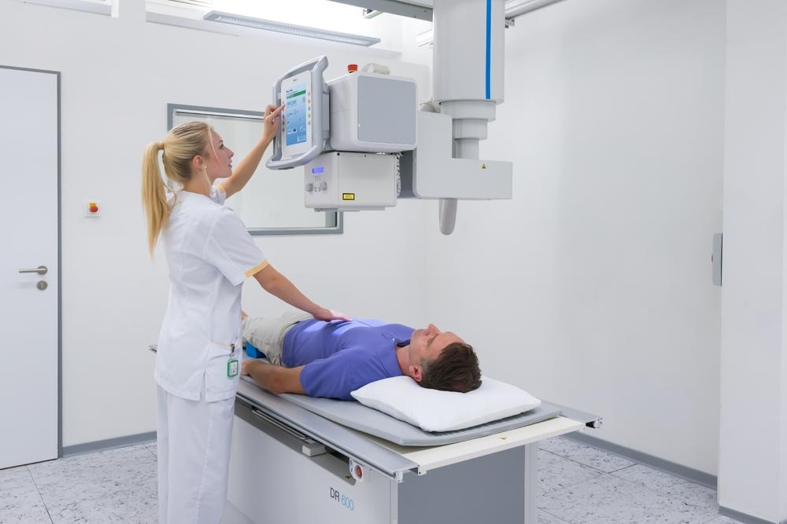
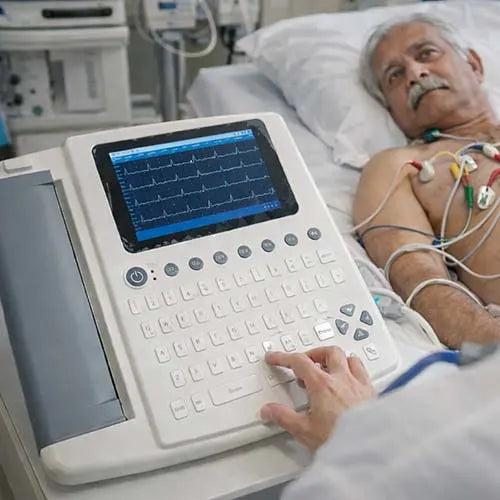
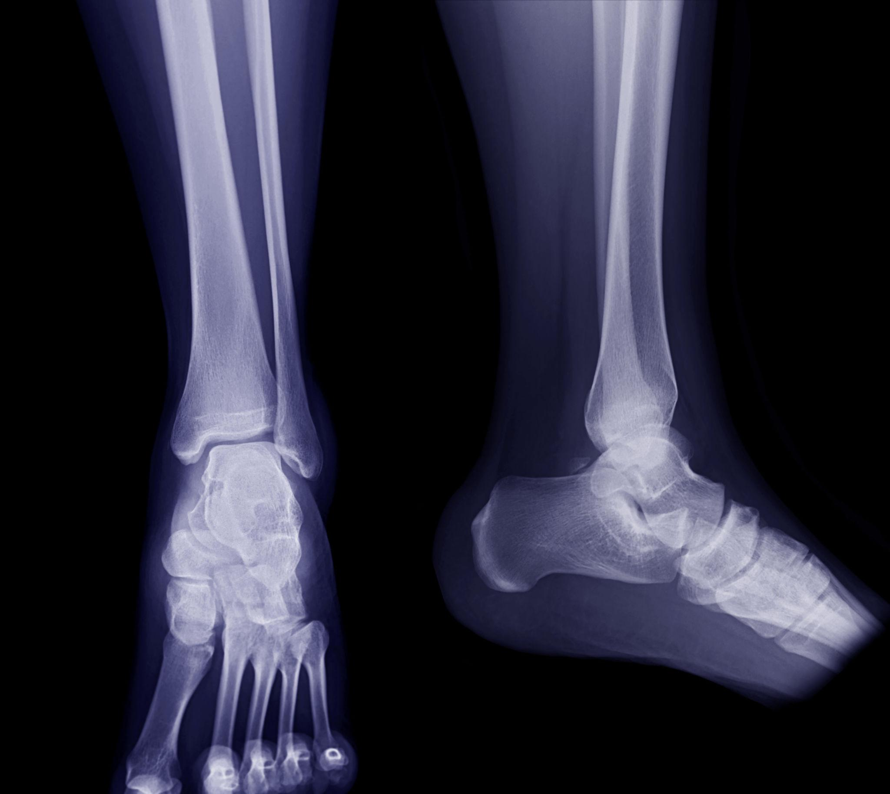
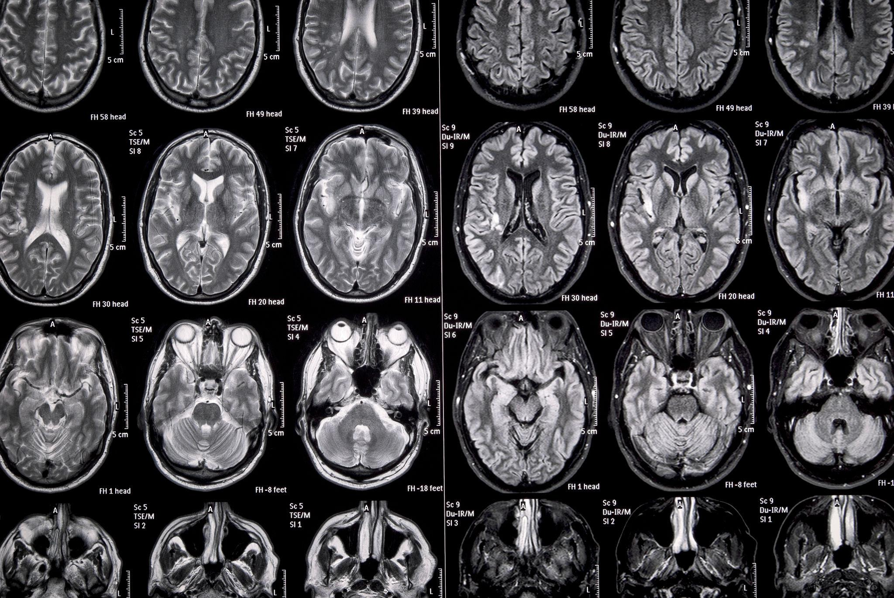
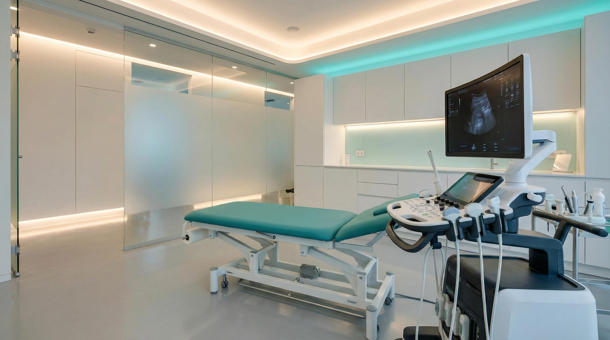
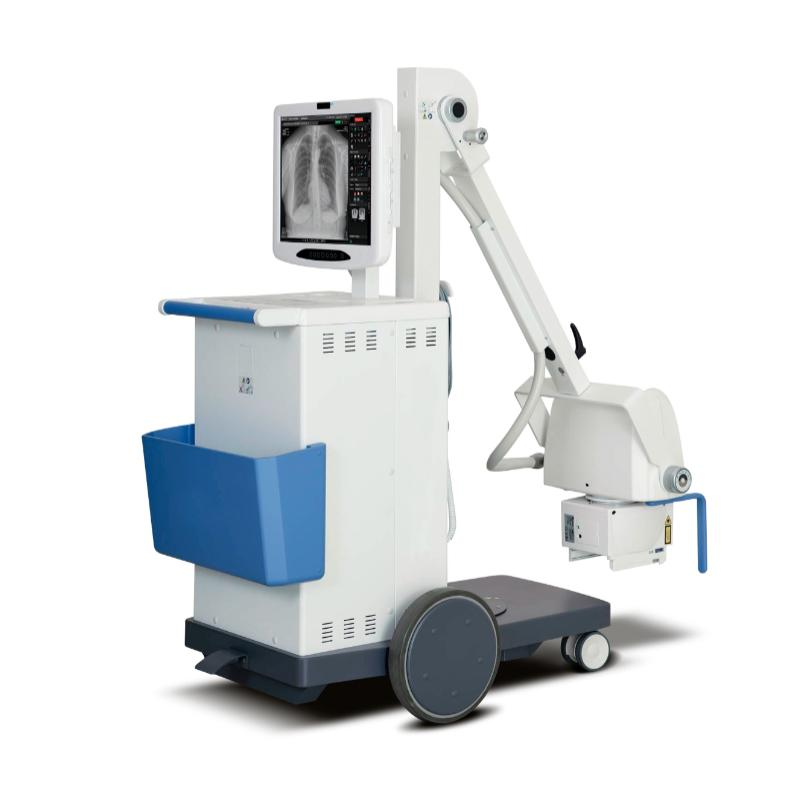

Comprehensive Diagnostic Imaging Services
From preventative wellness scans to complex musculoskeletal and cardiovascular diagnostic evaluations, our imaging center delivers precision, low-dose safety, and certified radiologist reporting.
Designed for Accuracy. Built for Care.
Our diagnostic imaging department integrates flat-panel digital radiography, multi-probe color Doppler ultrasound, and computerized 12-lead electrocardiography under one roof.

Digital RadiographyDigital Radiography (X-Ray)
High-throughput digital X-ray suite utilizing cesium iodide flat-panel detectors for sharp bone, joint, and thoracic imaging with minimal radiation dosage.
Ultrasound & Color Doppler
Radiation-free sonographic evaluations for whole abdomen, liver, kidneys, pelvic organs, soft tissues, and vascular flow studies by experienced sonologists.

Cardiac Test12-Lead Electrocardiography (ECG)
Simultaneous 12-lead electrical recording of myocardial depolarization and repolarization for arrhythmia detection, ischemia screening, and surgical clearance.
Chest Radiography & Pulmonary
Dedicated upright PA and lateral chest views assessing lung infiltrates, pneumonia, pleural effusions, cardiac dimensions, and rib cage traumas.

Orthopedic SurveyBone & Joint Radiography
Orthopedic examinations of limbs, ankles, knees, hips, hands, and shoulders with high-contrast bone trabecular definition and joint alignment.

Cross-SectionalCranial & Neurological Imaging
Advanced cross-sectional diagnostic interpretation of multi-sequence cranial studies, ventricles, cerebral parenchyma, and cervical spine pathways.
Fast, Low-Dose Digital X-Rays
Our digital radiography units produce sub-millimeter anatomical detail within seconds. Automated exposure control tailors the X-ray beam specifically to patient body habitus, safeguarding tissue while providing radiologists with unmatched diagnostic clarity.

Safe, Clear Ultrasound & Doppler Scans
Designed with soothing mint-cyan lighting and sound-absorbing finishes, our ultrasound suite creates a deeply relaxed setting for abdominal, pelvic, and obstetric evaluations. Multi-frequency convex and linear probes visualize organ boundaries, cyst walls, and blood velocities with acoustic precision.

Quick & Accurate 12-Lead Heart ECG
Equipped with high-fidelity signal filtering and automated interval detection, our digital electrocardiographs capture electrical heart waveforms cleanly. Every rhythm strip is immediately printed and reviewed by clinical cardiologists to detect ischemia, bundle branch blocks, and arrhythmias.
How Our Diagnostic Process Works
Consistent clinical protocols ensure every scan is performed correctly and comfortably.
Registration & Slip Review
Our patient concierge verifies your doctor’s referral prescription and provides specific pre-scan instructions.
Preparation & Shielding
You are guided to private changing cubicles and fitted with lead aprons for X-rays or warm acoustic gel for ultrasound.

Digital Scan Capture
Certified radiographers position you gently and capture the requested imaging sequence within minutes.
Radiologist Reporting
Our board-certified radiologist reviews the PACS images, writes the verified report, and releases digital results.